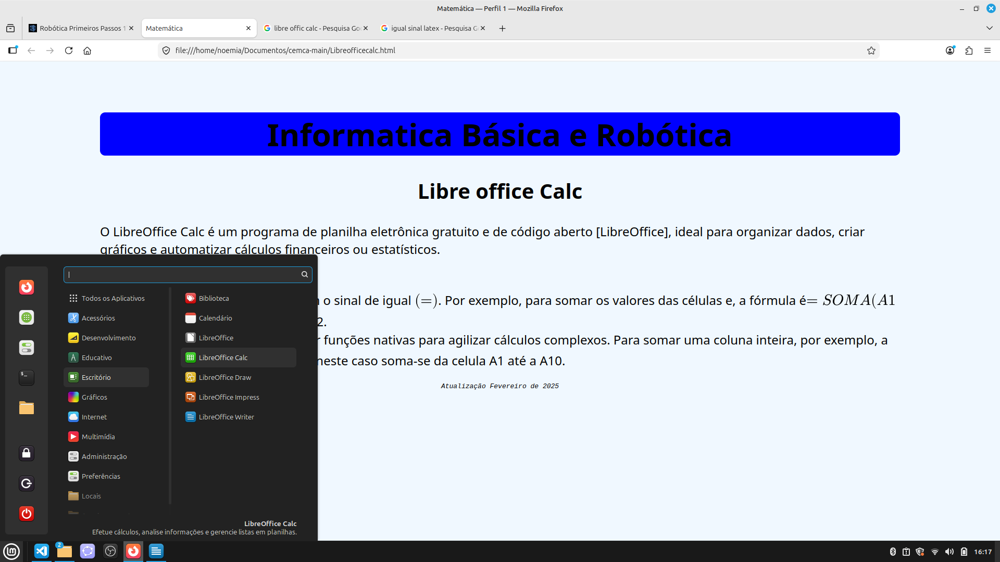
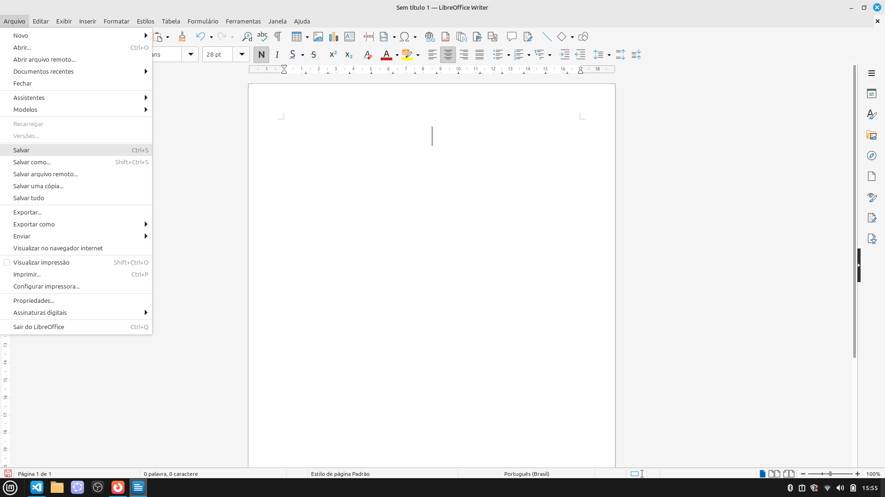
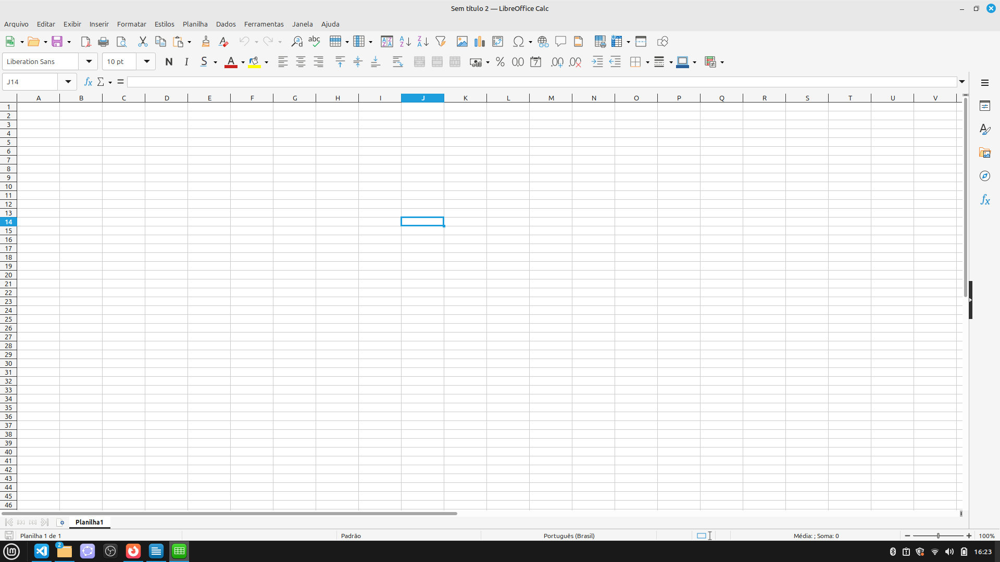

O LibreOffice Calc é um programa de planilha eletrônica gratuito e de código aberto [LibreOffice], ideal para organizar dados,
criar gráficos e automatizar cálculos financeiros ou estatísticos.
Acesso basta ir menu linux mint, ir em escritorio depois libre Office Calc

para salvar ir no canto superior esquerdo arquivos em Salvar e colocar o nome do seu arquivo exemplo arquivo.ods

o libre Office calc é composto por varios retangulos que se localizam pela coluna dada pelas letras do alfabeto, pelas linhas denotadas em números, estes retagulos se chamam celulas
esta na foto é a J14

Nestas celulas podemos colocar textos, números e formulas para uma planilha inteligente e etc...
Fórmulas: Sempre começam com o sinal de igual \((=)\). Por exemplo, para somar os valores das células e, a fórmula é\(=SOMA(A1+A2)\), soma-se as celulas A1 e A2.
Funções Prontas: Pode-se utilizar funções nativas para agilizar cálculos complexos. Para somar uma coluna inteira, por exemplo, a função é \(=SOMA(A1:A10)\),
neste caso soma-se da celula A1 até a A10.